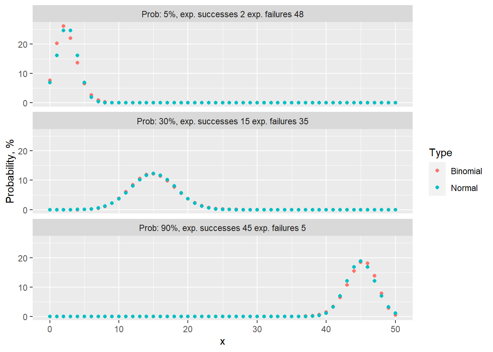

Code
# load libraries for blog post
library(ggplot2)
library(data.table)The binomial test, also known to as the one-sample proportion test or test of one proportion, is a statistical method utilized to determine whether the proportion of cases in one of only two categories is equivalent to a pre-specified proportion. Categories could include the default rate of clients within the next 12 months, patients with high or low risk of heart disease, potential customers who are likely or not likely to make a purchase, or the rate of manufacturing defects. This widely used test finds applications in diverse fields, including credit risk, medicine, and manufacturing.
As with all statistical tests, the binomial test has assumptions and conditions that must be met before applying it to real-life data. This blog post will examine two of these assumptions:
The aim of this blog post is to showcase the ramifications of failing to meet these assumptions. Practical examples are coded in both R and Python languages.
# load libraries for blog post
library(ggplot2)
library(data.table)# load packages for blog post
import numpy as np
import pandas as pd
import matplotlib.pyplot as plt
from scipy.stats import binom, norm
# set style
plt.style.use("ggplot")Suppose that we have a sample where outcomes are binary - e.g. only “success” and “failure”. For the given sample, we would like to estimate the true proportion and also set up a statistical test to verify whether if the proportion is equal to some value, e.g. expected.
First, we calculate a point estimate:
\[p = \frac{n_s}{n}\]
, where \(n\) - sample size and \(n_s\) - the number of successful observations (or it can be the number of failures).
\[SE = \sqrt{\frac{p \cdot (1 - p)}{n}}\] , where \(SE\) is standard error. To perform a test, one first needs to derive a Null hypothesis:
\[H_0: p = p_0\]
and an alternative hypothesis:
Finally, we needs to calculate \(Z\) statistics:
\[Z = \frac{p_0-p}{SE}\]
Obtaining the value of \(Z\) enables us to either compute confidence intervals (\(CI\)) or reject \(H_0\) in favor of \(H_A\)
In order to approximate any distribution as normal, the mean (\(\mu\)) and standard deviation (\(\sigma\)) must be known/calculated. For the Binomial distribution comprising \(n\) experiments and a probability of \(p\) normal distribution mean will be located at:
To approximate any distribution as normal, it is imperative to calculate the mean (\(\mu\)) and standard deviation (\(\sigma\)). For the Binomial distribution, which consists of a number of experiments \(n\) and a probability \(p\), the mean of the normal distribution is:
\[\mu = n \cdot p\]
and the standard deviation:
\[\sigma = \sqrt{n \cdot p \cdot (1 - p)}.\]
Meeting the “Success-Failure” condition is crucial to approximate Binomial distribution as Normal. Below, I present an instance of 50 Binomial events with varying probability rates of 5%, 30%, and 90%.
# probabilities
p <- c(0.05, 0.3, 0.9)
# successes
x <- 0:50
# create data.table
dt <- CJ(p, x)
# add size column
dt[, size := 50]
# add binomial probability
dt[, Binomial := dbinom(x, size=size, prob=p) * 100]
# create label column
dt[, label := paste0("Prob: ", round(p*100),
"%, exp. successes ", round(p*size),
" exp. failures ", round((1-p)*size))]
# calculate mean and standard deviation
dt[, mu := size * p]
dt[, st.dev := sqrt(p * (1 - p) * size)]
# get norm distribution
dt[, Normal := dnorm(x, mean=mu, sd = st.dev) * 100]
# convert to ordered factor
dt[, label := factor(label, levels=c("Prob: 5%, exp. successes 2 exp. failures 48",
"Prob: 30%, exp. successes 15 exp. failures 35",
"Prob: 90%, exp. successes 45 exp. failures 5" ))]
# reshape for plotting
dt.plot <- melt(dt, id.vars = c("x", "label"),
measure.vars = c("Binomial", "Normal"),
variable.name = c("Type"),
value.name = c('prob'))
# create figure
fig <- ggplot(dt.plot, aes(x, prob, color=Type)) + geom_point() + facet_wrap(~label, ncol = 1) + ylab("Probability, %")
fig
# calculate error (use data.table from previous code chunk)
dt[, Error := Binomial - Normal]
# create figure
fig <- ggplot(dt, aes(x, Error)) + geom_point() + facet_wrap(~label, ncol = 1) + ylab("Error (binom. - norm.), %")
fig
# probabilities
p = [0.05, 0.3, 0.9]
# successes
x = np.arange(51)
# create DataFrame with all combinations
df_1 = pd.DataFrame({'p': p})
df_2 = pd.DataFrame({'x': x})
# create key for joining
df_1['key'] = 0
df_2['key'] = 0
# perform cross join
df = df_1.merge(df_2, on='key', how='outer')
# drop key column
del df['key']
# add size value
df['size'] = 50
# calculate binomial probability
df['Binomial'] = binom.pmf(df['x'], df['size'], df['p']) * 100
# calculate mean and standard deviation
df['mu'] = df['size'] * df['p']
df['std'] = np.sqrt(df['p'] * (1 - df['p']) * df['size'])
# get norm distribution
df['Normal'] = df.apply(lambda x: norm.pdf(x['x'], x['mu'], x['std']) * 100, axis = 1)
# create figure
fig, ax = plt.subplots(3, 1, sharey=True)
# iterate over probabilities
for i, _p in enumerate(p):
# select data for plotting
dt_plot = df.loc[df['p'] == _p]
# plot binomial and normal distributions
ax[i].plot(dt_plot['x'], dt_plot['Binomial'], "o", label='Binomial');
ax[i].plot(dt_plot['x'], dt_plot['Normal'], "-", label='Normal', linewidth=3);
# add sub titles
ax[i].set_title(f"Prob. {_p*100:.0f}% exp. successes {50*_p:.0f} exp. failures {50*(1-_p):.0f}");
# add labels
ax[1].set_ylabel("Probability, %");
ax[2].set_xlabel("x");
# add legend and white background
legend = ax[1].legend(frameon = 1);
frame = legend.get_frame();
frame.set_color('white');
plt.tight_layout()
plt.show()
# calculate error (use DataFrame from previous code chunk)
df['Error'] = df.Binomial - df.Normal
# create figure
fig, ax = plt.subplots(3, 1, sharey=True)
# iterate over probabilities
for i, _p in enumerate(p):
# select data for plotting
dt_plot = df.loc[df['p'] == _p]
# plot binomial and normal distributions
ax[i].plot(dt_plot['x'], dt_plot['Error'], "o", color='k');
# add sub titles
ax[i].set_title(f"Prob. {_p*100:.0f}% exp. successes {50*_p:.0f} exp. failures {50*(1-_p):.0f}");
# add labels
ax[1].set_ylabel("Probability, %");
ax[2].set_xlabel("x");
plt.tight_layout()
plt.show()
The first thing to notice is that the “Success-Failure” criterion is only met for the p=30% case. In tabs error one can see that approximation error, i.e. Binomial prob. minus Normal, is more than 4% for 5% and 95% examples.
Content for this blog post was prepared using following references: